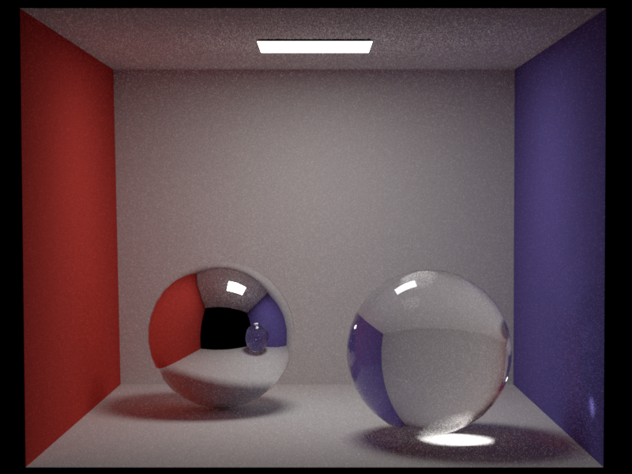
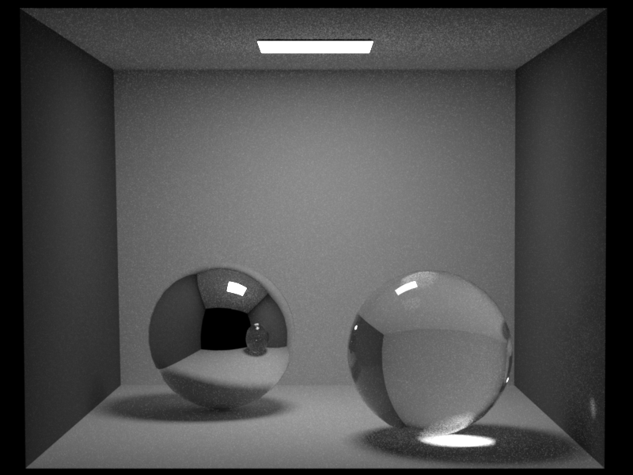
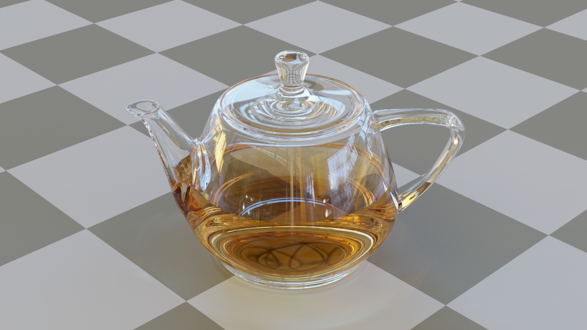
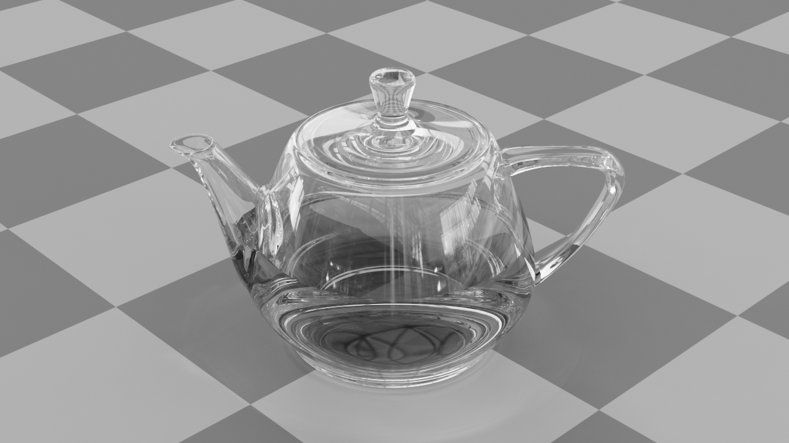

**Assignment XXX Report**
Student name: XXXX
(##) About this template
* Structure your report using numbers and titles following those of the assignment.
* For every task include all images you generated. dirt will generate both an `.hdr` and an sRGB tonemapped `.png` image of your rendering. Use the `.png` in the comparisons in your report.
* For tasks where we provide a reference image, include a comparison of your output to the reference (see examples of this below)
* Include descriptions of encountered problems, a list of external libraries that you used (if applicable) and the time you spent on each task.
For an overview of Markdeep and its syntax, see the [official demo document](https://casual-effects.com/markdeep/features.md.html) and
the associated [source code](https://casual-effects.com/markdeep/features.md.html?noformat).
(##) Feedback
Use this section to provide feedback about the assignment.
(##) Task 1
Create one section for each task. You can create subsections within each task if you need more structure.
LaTeX is also supported:
$$
L_o(\mathbf{x}, \omega_o) = \int_{\Omega} L_i(\mathbf{x},\omega_i)\, f(\mathbf{x}, \omega_i, \omega_o)\, |\cos\theta_i|\, \mathrm{d}\omega_i
$$
You can easily include an image comparison like so:


(##) Task 2


(##) Task 3, etc.
Add additional sections as needed.